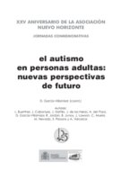
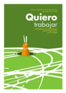
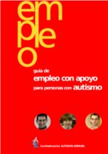
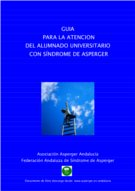
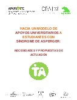
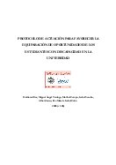
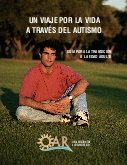
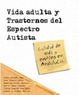

Orientación para adultos
- El autismo en personas adultas: nuevas perspectivas de futuro
-

…El objetivo de esta publicación es realizar una puesta al día de los diversos temas que preocupan a las familias y a los profesionales que trabajan a diario con las personas del espectro autista, tales como la promoción de la salud y de la calidad de vida, el ocio recreativo y terapéutico, la estimulación cognitiva y socioemocional, la enseñanza de las habilidades sociales a través de la realidad virtual, la educación de adultos con autismo, las nuevas políticas sociales…
…Los trabajos aquí publicados invitan a observar el porvenir de las personas con autismo con cierto optimismo, pues el futuro ya no es lo que solía ser, sino que se abre a nuevos horizontes, donde los sueños más exigentes se verán ampliamente realizados. El futuro se nos brinda, en consecuencia, como una magnifica oportunidad para tratar a las personas con autismo al ritmo que marcan sus propias necesidades…
- Empleo y personas con trastornos del espectro autista. Quiero trabajar
-

… Las personas con Trastornos del Espectro Autista pueden contribuir significativamente como trabajadores a su comunidad, cuando el empleo se ajusta bien a sus capacidades y necesidades. Y para ello deben estar cualificados, preparados y contar con los apoyos necesarios. Es frecuente encontrar en la bibliografía relativa al empleo de la población con TEA referencias que resaltan la importancia de un buen ajuste persona-puesto y sobre el tipo de ocupaciones en los que, a priori, obtienen buenos resultados. Esta publicación pretende ofrecer una guía a la persona con TEA para que desarrolle paso a paso el proceso completo de búsqueda de empleo, adaptación y mantenimiento del puesto de trabajo. A los cuidadores o profesionales pretende proporcionales pistas que les ayuden a apoyar a la persona a conocerse a sí misma, sus necesidades, evaluar sus competencias, generar campos o itinerarios… todo ello mediante adaptaciones, apoyos y sobre todo, de la implicación de los apoyos naturales…
- Guía de empleo con apoyo para personas con autismo
-

…Esta guía se enmarca dentro del proyecto de Empleo con Apoyo para Personas con Autismo financiado por la Fundación Luis Vives–Fondo Social Europeo para el fortalecimiento de las organizaciones no gubernamentales que promueven la inserción laboral de personas en riesgo de exclusión, en el marco del Programa Operativo de Lucha contra la Discriminación (2000–2006) y cofinanciado por la Fundación ONCE.
El objetivo de este trabajo es promover el camino hacia un modelo real de inclusión en el marco laboral, el empleo con apoyo, que permite a las personas adultas con autismo hacer realidad el derecho que, como el resto de la población, tienen a formar parte activa de la sociedad en la que viven. Por eso, consideramos que el empleo con apoyo es la modalidad más idónea para las personas con autismo…
- Guía para la atencion del alumnado universitario con síndrome de Asperger
-

…Las alteraciones básicas en la interacción social, comunicación, así como la rigidez mental y comportamental junto con los problemas frecuentemente añadidos de coordinación motora e hipersensibilidad, así como los puntos débiles de su funcionamiento cognitivo, plantean un particular desafío para los estudiantes universitarios con síndrome de Asperger.
- Encuentran muy difícil hacer amigos y a menudo les gusta que les dejen solos, a su aire.
- La relación con los otros son uno de los aspectos más estresantes de su vida como estudiantes y los trabajos en grupo pueden suponer un reto excesivo.
- Les cuesta mirar a los ojos del interlocutor.
- Son muy torpes a la hora de interpretar señales no verbales.
- Tienen importantes limitaciones en las situaciones de conversación, debido al desconocimiento de las claves no verbales.
- Los demás encuentran su habla algo extraña o pedante.
- …
- Hacia un modelo de apoyos universitarios a estudiantes con síndrome de Asperger
-

… La llegada a las universidades de personas con Síndrome de Asperger o con Autismo de Alto Funcionamiento (en adelante, SA y AAF, respectivamente) es una realidad todavía minoritaria en nuestro país. Sin embargo, previsiblemente, esta situación dejará de resultar excepcional en pocos años. Primero, porque estos trastornos, que fueron reconocidos oficialmente por las clasificaciones psiquiátricas en los años 90, se diagnostican cada vez con más frecuencia y también más tempranamente en nuestro país. Segundo, porque ya se conocen en detalle las necesidades derivadas de estos trastornos en los distintos ámbitos (educativo, clínico, social…), y, amparándose en la legislación vigente, se han ido creando, entre otros, programas de apoyo específicos en la etapa de enseñanza obligatoria que permitirán evitar el abandono de los estudios y el fracaso escolar de estos alumnos.
Las universidades españolas deberían prepararse adecuadamente para acoger y atender a estudiantes con SA y AAF garantizando una completa igualdad de oportunidades respecto a sus compañeros (sin y con discapacidad), y facilitando su plena integración académica y social. Para ello, resulta imprescindible conocer las complejas y especiales características y necesidades de los estudiantes con SA y AAF, pero, también, las no menos complejas y especiales condiciones normativas, académicas, etc. que rigen las actividades de los estudiantes, profesores y demás miembros de la comunidad universitaria…
- Protocolo de actuación para favorecer la equiparación de oportunidades de los estudiantes con discapacidad en la universidad
-

…Los nuevos enfoques y modelos teóricos han supuesto un cambio relevante a la hora de entender la discapacidad. El foco del problema, que tradicionalmente se había situado en la persona con discapacidad y en sus limitaciones, se centra ahora en el entorno en el que la persona se desenvuelve y se asume, por tanto, que es en él donde deben prestarse todos los apoyos y hacerse todas las adaptaciones necesarias para minimizar las diferencias entre el entorno y la persona, y para mejorar su autonomía, su integración y su calidad de vida.
Este planteamiento que conocemos como “Paradigma de apoyos” justifica, sin duda, la existencia de servicios de apoyo para estudiantes con discapacidad en las universidades que faciliten la integración de estos alumnos y promuevan la igualdad de oportunidades en los estudios superiores. En las universidades españolas estos servicios empezaron a aparecer y expandirse en la década de los 90 y actualmente la mayoría de ellas cuentan ya con un servicio o proporcionan apoyo a estos estudiantes a través de otras estructuras más generales. Sin embargo, un análisis pormenorizado de todos los servicios y programas de apoyo de las diferentes universidades de nuestro país revela la gran heterogeneidad de los mismos en todos los sentidos: tipo de apoyos que se prestan, número y perfil de los profesionales que los atienden, estructura administrativa de la que dependen…
- Un viaje por la vida a través del autismo: Guía para la transición a la edad adulta
-

… A principios del 2003, OAR (http://www.researchautism.org/) publicó su primera guía titulada Un viaje por la vida a través del autismo: Guía de los padres para la investigación. Esta guía es una introducción al mundo de la investigación del autismo dirigida a padres que tienen un hijo recién diagnosticado con un trastorno del espectro autista. Posteriormente, OAR (http://www.researchautism.org/) publicó dos tomos más en la serie Un viaje por la vida a través del autismo, llamados Guía del autismo para los educadores y Guía del síndrome de Asperger para los educadores. El tomo que tiene en sus manos es el próximo paso lógico en la serie, Guía para la transición a la edad adulta.
Esta guía está diseñada para presentar a los padres, maestros y otros profesionales de la educación, el proceso de transición a la vida adulta. Cada uno de los temas contenidos en esta Guía merece un tomo individual; por lo tanto, esta Guía tiene la intención de ser un punto de partida para padres y educadores a medida que van aprendiendo. Es más, dada la diversidad con que se manifiesta el espectro autista, es probable que nada de la información presentada aquí sea relevante a todos los adultos jóvenes en el espectro (con la posible excepción de la descripción de las leyes que apoyan la planificación de la transición). Pero con suerte, la mayoría será relevante a la situación de su hijo, hija, estudiante o cliente. De esta manera, Guía para la transición a la edad adulta puede interpretarse como un resumen general de la multitud de preguntas que tendrá que responder como parte del proceso de planificación de la transición, y a la vez reconocer que las respuestas a esas preguntas van a ser tan diversas e individuales como el espectro mismo…
- Vida adulta y trastornos del espectro autista
-

…Los Trastornos del Espectro Autista constituyen una fuente crónica de discapacidad. Al igual que otros trastornos del desarrollo, se habían asociado habitualmente a las edades infantil y juvenil. Sin embargo, como también en el resto de discapacidades, los procesos de desinstitucionalización y el aumento de la esperanza de vida, han llevado a plantear la necesidad de proponer actuaciones e iniciativas que sirvan de apoyo en aquellos momentos en que la escuela ya no es la opción más apropiada. La transición hacia una vida independiente, el empleo y el mundo de las relaciones adultas se convierten en el referente obligado para garantizar una adecuada calidad de vida en esa nueva etapa.
El presente trabajo constituye el primer intento de aproximación a la realidad de la población adulta con Trastornos del Espectro Autista realizado en la Comunidad Autónoma Andaluza. En el marco de un acuerdo de colaboración entre la Federación Autismo Andalucía y el Departamento de Psicología Evolutiva y de la Educación de la Universidad de Sevilla, y con la financiación del Servicio Andaluz de Empleo, pretende analizar la situación actual de esta población y elaborar un mapa de sus necesidades de apoyo más urgentes e inmediatas…
Publicaciones presentadas en esta página
- El autismo en personas adultas: nuevas perspectivas de futuro
- Empleo y personas con trastornos del espectro autista. Quiero trabajar
- Guía de empleo con apoyo para personas con autismo
- Guía para la atencion del alumnado universitario con síndrome de Asperger
- Hacia un modelo de apoyos universitarios a estudiantes con síndrome de Asperger
- Protocolo de actuación para favorecer la equiparación de oportunidades de los estudiantes con discapacidad en la universidad
- Un viaje por la vida a través del autismo: Guía para la transición a la edad adulta
- Vida adulta y trastornos del espectro autista
La edición y mantenimiento de EspectroAutista.Info se ha descontinuado. Para conocer todos los detalles lea la última noticia.